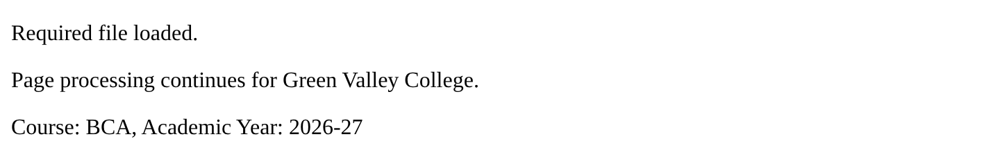

Write a PHP code to demonstrate file inclusion function – require().
Program 4.6: Demonstrating require
Concepts used
The require statement, an essential configuration file, constants and variables shared between files.
Test data: College name Green Valley College; academic year 2026-27; course BCA, set in the configuration file.
Logic
- Create
includes/config.php, which defines the settings used by the page. - In
require-demo.php, load the configuration with require. - Print a message confirming that the required file was loaded, and use the settings to continue processing.
Code
Create a folder named includes next to the main file, and save the shared files in it.
<?phprequire "includes/config.php"; // the page cannot work without these settings?><!DOCTYPE html><html lang="en"><head> <meta charset="UTF-8"> <title>require Demonstration</title></head><body> <?php echo "<p>Required file loaded.</p>"; echo "<p>Page processing continues for $collegeName.</p>"; echo "<p>Course: $course, Academic Year: " . ACADEMIC_YEAR . "</p>"; ?></body></html>
<?php// Essential settings needed by every page of the applicationconst ACADEMIC_YEAR = "2026-27";$collegeName = "Green Valley College";$course = "BCA";
Output
These are real screenshots, taken by running the program with the test data.

Understanding the output
All three lines depend on the configuration file: the college name, the course and the academic year were defined there and used in the main file. The behaviour of this page when the configuration file is missing, compared with the behaviour of include, is explained in Section 4.7.2.
How it works
The require statement at the top inserts includes/config.php, which defines the constant ACADEMIC_YEAR and the variables $collegeName and $course. The configuration file produces no output. Since require stops the script when the file is missing, the first echo statement can be reached only if the file was loaded; the message "Required file loaded." therefore confirms the successful inclusion. The next statements use the settings defined in the required file.
Run it yourself
Real PHP 8.3 runs inside your browser (nothing is sent to a server). Forms, links, cookies and sessions work as they do in XAMPP. The first run downloads PHP, so it needs internet and takes a few seconds.
Try this:
- Change the academic year in
includes/config.php. - Change the require to
require "includes/conf.php";(a wrong name). The page stops with a fatal error.
Running it in XAMPP
Save config.php in C:\xampp\htdocs\phpbook\ch04\includes and require-demo.php in C:\xampp\htdocs\phpbook\ch04, and open http://localhost/phpbook/ch04/require-demo.php.
Common mistakes
- Using include for an essential file, so that the page continues and shows incomplete or wrong results when the file is missing.
- Writing a closing ?> followed by blank lines in a configuration file, which sends unwanted blank output before the page.
- Assuming that require and include differ when the file exists; in that case, they behave in the same way.